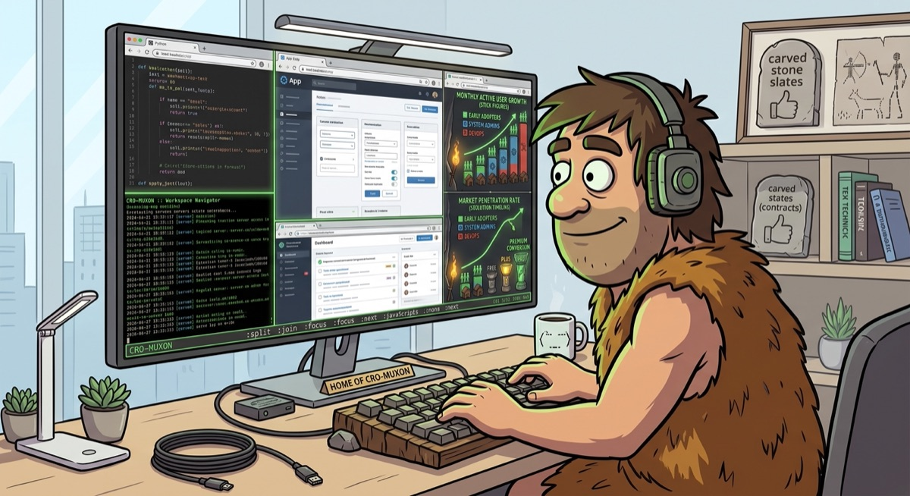

Primitive keybindings. Modern multiplexing.
● Get it on the Chrome Web Store (opens in a new tab)

ditch the mouse, embrace the mux
Arranging browser windows by hand gets old fast: dragging borders, hunting for the one tab you actually meant to click, redoing the same layout every morning. Cro-Muxon fixes that the old way — tile everything from the keyboard, and never touch a window border again.
Cro-Muxon brings tmux-style window tiling to Chrome. It splits and manages real, native browser windows as panes — arranged, resized, and navigated entirely from the keyboard, with a retro terminal-styled pane picker for jumping around your workspaces.